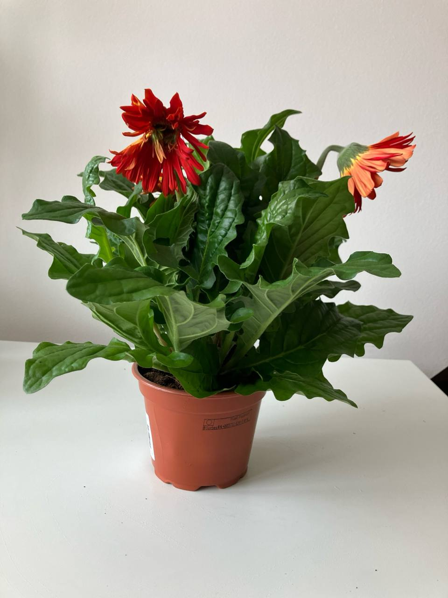

Activity
- Scheduled
- Feeding 18-08-2024
Red Gerbera Plant Care Guide
Environment
Light
- Bright Light: Red Gerberas thrive in bright, indirect sunlight. Direct sunlight can damage the flowers and leaves, so it's best to place them where they receive plenty of light but are shielded from harsh midday sun.
Soil
- Well-Draining Soil: Use a rich, well-draining potting mix. A mix containing peat, perlite, and compost works well for Gerberas.
Temperature
- Moderate Temperatures: Gerberas prefer temperatures between 60-75°F (15-24°C). Protect the plant from frost and extreme heat.
Routine jobs
Watering
- Consistent Moisture: Keep the soil consistently moist, but not waterlogged. Water the plant when the top inch of soil feels dry. Ensure proper drainage to prevent root rot.
- Water at Base: Water at the base of the plant to keep the leaves dry and prevent fungal diseases. Avoid overhead watering.
Feeding
- Fertilization: Feed the plant every 2-3 weeks during the growing season (spring and summer) with a balanced liquid fertilizer. Reduce feeding during the fall and winter months.
Potting
- Container Choice: Use a pot with good drainage holes to prevent water accumulation. Repot the plant annually or when it outgrows its container.
Troubleshooting
- Common Pests: Watch for pests such as aphids, spider mites, and whiteflies. Treat infestations with insecticidal soap or neem oil.
- Disease Prevention: Ensure good air circulation around the plant and avoid waterlogged soil to prevent fungal diseases like powdery mildew and root rot.
Flowering
- Bloom Cycle: Gerberas bloom best in the spring and summer. Deadhead spent flowers to encourage more blooms and maintain the plant's appearance.